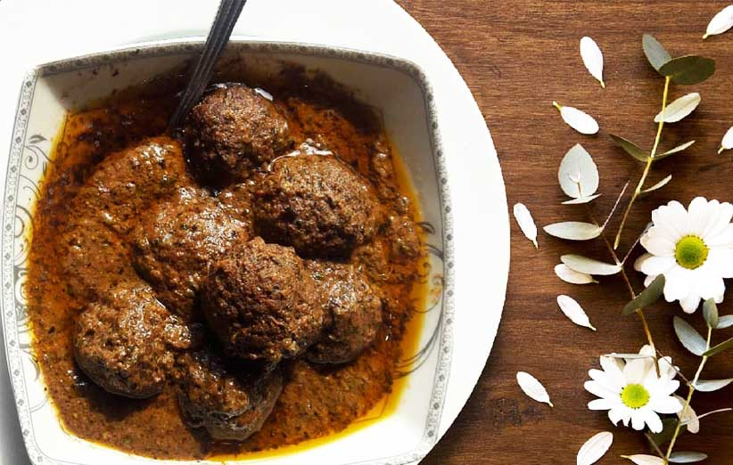

انار بیج

تاریخپه غدا
خورش اناربیج یکی از انواع خورش های محبوب در شمال کشورمان است که با ترکیبات متنوعی درست می شود.
-
مواد لازم
- گوشت چرخ کرده
- پیاز
- سبزی معطر
- مغز گردو
- رب انار
- نمک، فلفل و زردچوبه
-
طرز تهیه
- برای تهیه خورش انار بیج شمالی ابتدای کار گوشت را به تکه های کوچک تقسیم می کنیم، سپس درون چرخ گوشت قرار می دهیم و چرخ می کنیم. در ادامه مغز گردو را درون چرخ گوشت می ریزیم و چرخ می کنیم.
- حالا سبزی معطر (جعفری، گشنیز، نعنا، چوچاق و خالواش) را می شوییم، سپس درون آبکش قرار می دهیم و اجازه می دهیم آب اضافی شان کاملا خارج شود. در ادامه سبزی معطر را روی تخته گوشت قرار می دهیم.
- در این مرحله سبزی معطر را به صورت ساطوری ریز خرد می کنیم. در ادامه یک تابه مناسب روی حرارت ملایم قرار داده و اجازه می دهیم تابه به خوبی گرم شود، سپس سبزی خرد شده را درون تابه می ریزیم.
- حالا سبزی را تفت می دهیم تا آب اضافی اش تبخیر شود. در ادامه مقداری روغن مایع به سبزی اضافه می کنیم، سپس تفت می دهیم تا سبزی کمی سرخ شود. دقت کنید سرخ شدن بیش از حد سبزی خورش را تلخ می کند.
- در این مرحله پوست ۱ عدد پیاز را جدا می کنیم، سپس می شوییم و با دندانه های ریز رنده، رنده می کنیم. در ادامه پیاز رنده شده را به همراه نمک و فلفل سیاه به گوشت چرخ کرده اضافه می کنیم، سپس ورز می دهیم.
- حالا مقداری از گوشت چرخ کرده بر می داریم و به اندازه های دلخواه کوفته های قلقلی درست می کنیم. در ادامه یک قابلمه مناسب روی حرارت ملایم قرار می دهیم، سپس مقداری روغن مایع درون آن می ریزیم.
- در این مرحله پوست پیاز باقی مانده را جدا می کنیم و می شوییم، سپس به صورت ریز رنده می کنیم و به قابلمه اضافه می کنیم. در ادامه پیاز را تفت می دهیم تا سبک و شیشه ای شود، سپس گردو را اضافه می کنیم.
- حالا گردو را تفت می دهیم تا بوی خامی آن گرفته شود، سپس زردچوبه، نمک و فلفل سیاه را اضافه می کنیم. در ادامه ۴ لیوان آب جوش به گردو اضافه می کنیم و اجازه می دهیم با حرارت ملایم جوش بزند تا روغن بیندازد.
- در این مرحله زمانی که گردو روغن انداخت، سبزی خرد شده را به آن اضافه می کنیم، سپس مخلوط می کنیم و اجازه می دهیم سبزی کاملا پخته شود. در ادامه پس از پخته شدن سبزی حرارت زیر قابلمه را زیاد می کنیم.
- در این مرحله کوفته قلقلی ها را درون خورش قرار می دهیم. توجه داشته باشید زمانی که می خواهیم کوفته ها را اضافه کنیم، خورش باید در حال جوشیدن باید تا کوفته ها از هم باز نشوند. در ادامه رب انار را به خورش اضافه می کنیم.
- در نهایت اجازه می دهیم خورش بجوشد تا کاملا جا بیوفتد. در ادامه زمانی که خورش کاملا جا افتاد حرارت را خاموش می کنیم، سپس درون ظرف مورد نظرمان می ریزیم. در آخر خورش انار بیج را با پلو زعفرانی سرو کنید.